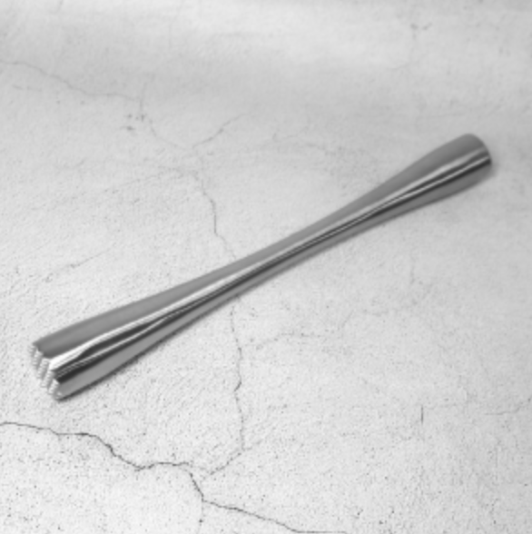

지거 : 계량에 사용하는 기구로서 보통 1oz 와 3/2oz로 이루어져 있다.
 바 스푼 : 재료를 섞거나 소량을잴 때 사용하는 기구이다.
바 스푼 : 재료를 섞거나 소량을잴 때 사용하는 기구이다.
 믹싱 글라스 : 마티니 등 휘젓기 기법에서 사용하는 기구로서, 비중이 가벼운 칵테일이나 혼합하기 쉬운 칵테일을 섞을 때 사용한다.
믹싱 글라스 : 마티니 등 휘젓기 기법에서 사용하는 기구로서, 비중이 가벼운 칵테일이나 혼합하기 쉬운 칵테일을 섞을 때 사용한다.
스트레이너 : 얼음을 거르는 기구이다.
머들러 : 과일 등을 으깰 때 사용하는 막대이다.
 칵테일 픽 : 장식으로 쓰는 올리브나 체리 등을 꽂을 때 사용하는 핀이다.
칵테일 픽 : 장식으로 쓰는 올리브나 체리 등을 꽂을 때 사용하는 핀이다.
 블렌더 : 혼합하기 어려운 재료를 섞거나 프로즌 스타일의 칵테일을 만들 때 사용한다.
블렌더 : 혼합하기 어려운 재료를 섞거나 프로즌 스타일의 칵테일을 만들 때 사용한다.
스퀴저 : 레몬, 오렌지 등의 과즙을 짤 때 사용하는 기구이다.
 글라스 리머 : 글라스 림에 소금이나 설탕을 묻힐 때 사용하는 기구이다.
글라스 리머 : 글라스 림에 소금이나 설탕을 묻힐 때 사용하는 기구이다.
아이스 페일 : 얼음통을 말한다.
아이스 텅 : 얼음집게를 말한다.
아이스 스쿠프 : 글라스나 셰이커 등에 얼음을 담을 때 사용한다.
스토퍼 : 보조 병마개로서 탄산음료나 샴페인 등을 사용하고 남은 일부를 보관할 때 사용하는 기구이다.
글라스 홀더 : 뜨거운 종류의 칵테일을 고객에게 제공할 때 뜨거운 글라스를 넣을 수 있는 손잡이가 달린 기구를 말한다.
제스터 : 레몬이나 오렌지의 껍질을 벗기는 칼이다.
 아이스 픽 : 얼음을 잘게 부술 때 사용하는 기구이다.
아이스 픽 : 얼음을 잘게 부술 때 사용하는 기구이다.
푸어러 : 병에 꽂아서 사용하며 주류를 따를 때 흘리지 않도록 하는 기구이다.
 스터 로드 : 스터러라고도 하는데 음료를 저을 때 사용한다.
스터 로드 : 스터러라고도 하는데 음료를 저을 때 사용한다.